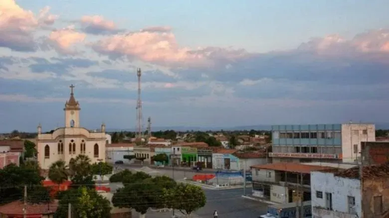

Xique-Xique é um município brasileiro do estado da Bahia, Região Nordeste do país. Está situado à margem direita do Rio São Francisco,
que abriga um porto de grande importância para economia da região. A origem do nome Xique-Xique está associada à abundância
de cactos do tipo xiquexique encontrados pelos primeiros colonizadores da região.
Curiosidade Xique-Xique
Uma curiosidade interessante sobre Xique-Xique, na Bahia, é que a cidade tem um dos maiores projetos de piscicultura do Brasil,
devido à sua localização às margens do Rio São Francisco. A pesca e a criação de peixes, como o surubim e a tilápia, são atividades
fundamentais para a economia local. Além disso, a cidade já foi chamada de Urubu de Cima antes de adotar o nome atual.
Bela foto da cidade de Xique-Xique:
